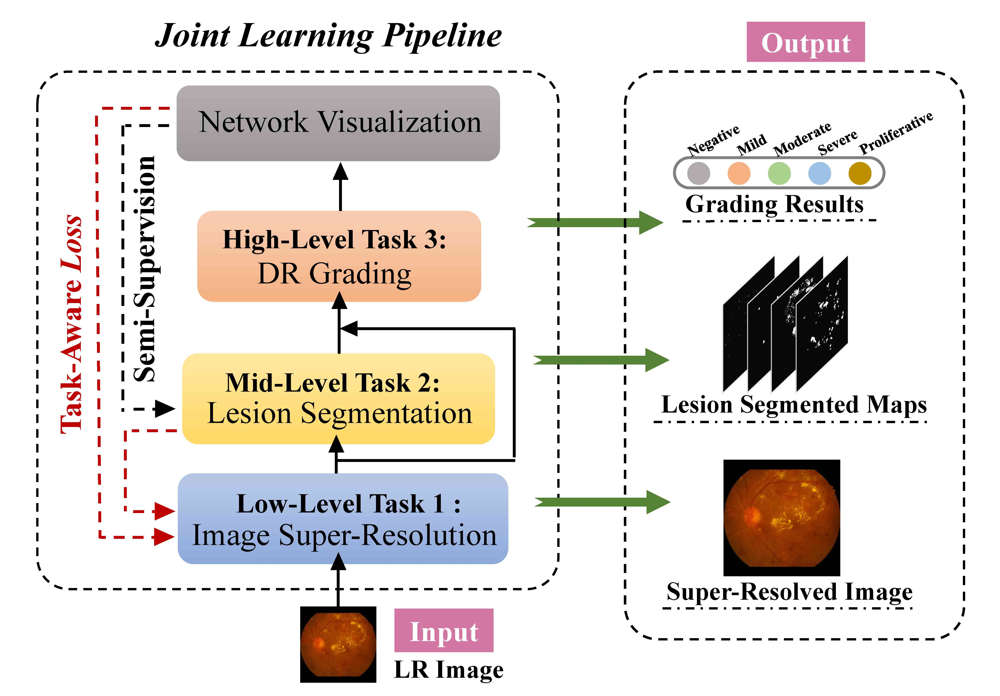

WANG, Xiaofei
WANG, Xiaofei |
I’m looking for a PhD position. Here is my full Curriculum Vitae (CV).
Biography
I am a 2nd-year master student at the Multimedia Computing Towards Communications (MC2) Lab, Beihang University, China, under the supervision of Prof. Mai Xu and Prof. Xin Deng. My research interests include medical image analysis, computer vision and machine learning. I obtained the B.Sc. degree in 2019 at the Beihang University, P.R. China.
I worked as a Research Intern (2021.03-Now) in the Computational Cognition, Vision, and Learning Group, Johns Hopkins University, under the supervision of Prof. Alan Yuille and Dr. Zongwei Zhou, with the research topic of interpretable semantic segmentation.
News
- One paper is accepted to IEEE Trans. on Medical Imaging (T-MI). [Paper] [Code]
- One paper is accepted to CVPR 2021 [Paper].
- One paper is accepted to AAAI 2021 [Paper] [Code].
- One paper is accepted to MICCAI 2020 (early accept) [Paper] [Code].
- I won the Undergraduate Travel Award at MICCAI 2019.[Certificate]
- One paper is accepted to MICCAI 2019 [Paper] [Code].
- One paper is accepted to IEEE Trans. on Medical Imaging (T-MI). [Paper]
- One paper is accepted to CVPR 2019 [Paper] .
{kind=link}
Selected Publications
|
Joint Learning of 3D Lesion Segmentation and Classification for Explainable COVID-19 Diagnosis. |
|
|
Saliency-Guided Image Translation |
|
|  |
Deep Multi-Task Learning for Diabetic Retinopathy Grading in Fundus Images |
|
DeepGF: Glaucoma Forecast Using the Sequential Fundus Images. |
|
|
Pathology-aware Deep Network Visualization and its Application in Glaucoma Image Synthesis. |
|
 |
A Large-Scale Database and a CNN Model for Attention-Based GlaucomaDetection |
|
Attention based Glaucoma Detection: A Large-scale Database and CNN Model. |
Projects
See more details of my projects.- Researches on Interpretable Neural Network
Interpretable Semantic Segmentation via Convolutional Sparse Coding, 2021-Now (1st Auther)
Network Visualization and its Application in Medical Image Synthesis, 2018-2019 [Paper] (1st Auther)
- Researches on Multi-task Learning
Joint Learning of Multi-level Vision Tasks for Medical Image Analys, 2019-2020 [Paper] (1st Auther)
Joint Learning of 3D Lesion Segmentation and Disease Classificati, 2020-2021 [Paper] (1st Auther)
- Researches on Disease Diagnosis and Forecast
Dynamic Model for Disease Forecast, 2019-2020 [Paper] (1st Auther)
Attention Mechanism-based Medical Image Detection and Visualizatio, 2018-2019 [Paper] (1st Auther)
- Researches on Image-to-Image Translation
Saliency-Guided Image Translatio, 2019-2020 [Paper] (2nd Auther)
Awards
- Winner of Undergraduate Travel Award at MICCAI 2019. [Certificate]
- First Class of Academic Competition Scholarship of Beihang University [Certificate]
- First Prize in 11th National College Students Information Security Competition [Certificate]
- First Prize in 8th Beijing undergraduate IC Design Competition [Certificate]
- Second Prize in 27th Beijing University Mathematics Competition [Certificate]
{kind=link}
{kind=link}
{kind=link}
{kind=link}
Teaching
- Teaching Assistant: Digital Image Processing, Beihang University (Spring 2020)